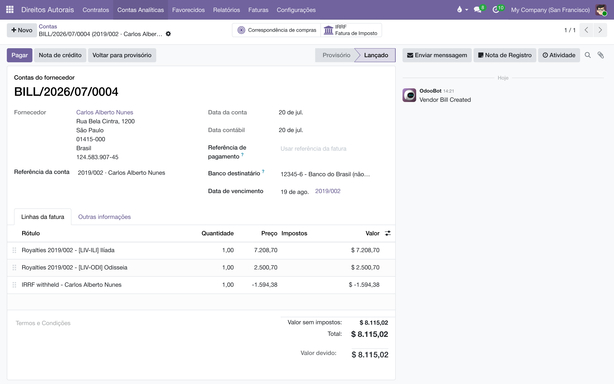

Pagamento de royalties
Transforme os royalties em aberto de cada autor em uma fatura de fornecedor com um clique — e, quando a fatura for paga, o saldo do autor se acerta sozinho.
Visão geral
O Cálculo de royalties mantém, para cada favorecido × obra, o saldo do que a editora deve. Este módulo fecha o ciclo do dinheiro:
- Uma ação gera as faturas de fornecedor que pagam os autores: uma fatura por favorecido, com uma linha por obra que ainda deve royalties.
- Quando a fatura é paga, a Data do Último Pagamento das linhas de royalty é carimbada automaticamente e a quitação é lançada na conta analítica — o saldo em aberto zera na hora, sem passo manual.
- Os menus e os botões inteligentes do contrato mostram o que falta pagar e o que já foi pago.
Se o módulo de IRRF sobre direitos estiver instalado e configurado, a fatura já nasce com a retenção do imposto descontada.
Os menus e as ações deste módulo são visíveis apenas para o grupo Administrador de Direitos Autorais.
Configuração
O módulo funciona de fábrica: ele traz um produto de serviço chamado "Royalties" que é usado nas linhas das faturas quando você não escolhe outro. Ainda assim, vale conferir as opções:
- Acesse , seção Pagamentos aos Beneficiários.
- Produto de pagamento — o produto lançado nas linhas da fatura do autor. Vazio usa o "Royalties (padrão do módulo)".
- Conta de despesa — a conta contábil dessas linhas. Vazio usa a conta de despesa do próprio produto.
- Diário de compras — o diário onde as faturas são lançadas. Vazio usa o diário de compras padrão da empresa.
- Prazo de pagamento — quantos dias para pagar: o vencimento da fatura é a data de geração mais esse prazo (padrão 30).
- Salve. As opções são por empresa.
Gerar as faturas dos autores
- Abra o contrato (ou selecione vários na lista de ).
- No menu Ação, escolha Gerar Faturas de Royalties.
- O sistema percorre as linhas de royalty e monta as faturas: uma por favorecido, com uma linha por obra cujo saldo em aberto seja positivo. Cada linha usa o produto de pagamento, o valor devido e o nome "Direitos autorais contrato - obra".
- A fatura nasce em rascunho, com data de hoje, vencimento conforme o prazo configurado e a referência "número do contrato · favorecido".
- A tela abre a lista das faturas criadas. Confira, confirme e registre o pagamento como em qualquer fatura de fornecedor.
Se não houver nada a faturar, uma notificação avisa: "Nenhuma fatura a criar — os beneficiários não têm royalties em aberto, ou suas faturas já existem."

Uma fatura em aberto trava a próxima. Enquanto existir uma fatura não paga (e não cancelada) pagando uma linha de royalty, a ação não gera outra para a mesma linha — é a guarda contra pagamento em duplicidade. Pague (ou cancele) a fatura pendente antes de gerar de novo.
Acompanhar o que falta pagar
- Acesse para ver todas as faturas de royalties ainda não pagas (inclusive as parcialmente pagas), de todos os contratos.
- Em ficam as já pagas.
- No formulário do contrato, os botões inteligentes resumem a situação: Em Aberto (o total de royalties ainda devidos), Pago (o total já quitado), A Pagar (quantidade de faturas pendentes) e Faturas Pagas.
Na própria fatura, o campo Contrato de Direitos Autorais mostra de onde ela veio, e cada linha guarda (na coluna opcional Linha de Royalty) o par favorecido × obra que ela paga.
O que acontece quando a fatura é paga
- Registre o pagamento da fatura normalmente (botão Registrar pagamento da contabilidade).
- No momento em que a fatura fica paga (ou em pagamento), o sistema carimba a data de hoje na Data do Último Pagamento de cada linha de royalty paga por ela.
- Em seguida, lança na conta analítica de cada linha o lançamento de quitação ("Pagamento"): um valor positivo que zera tudo o que estava apurado até essa data — inclusive a parte do adiantamento já recuperada.
- O botão Em Aberto do contrato e o saldo do favorecido refletem a baixa imediatamente; os royalties das vendas seguintes começam a acumular de novo, do zero.
Fatura em rascunho não quita nada. Só a fatura confirmada e paga carimba a data de pagamento e liquida o saldo — gerar a fatura, por si só, não muda o que é devido. E o custo contábil lançado pela própria fatura é marcado à parte, para não inflar o saldo em aberto de volta.
Regras e guardas
- Uma fatura por favorecido: mesmo com várias obras no contrato, o autor recebe uma única fatura com uma linha por obra — como espera quem recebe.
- Só saldo positivo vira fatura: linhas sem conta analítica, com saldo zero ou com adiantamento ainda não recuperado ficam de fora.
- Sem duplicatas: a linha que já tem fatura em aberto não entra em uma nova geração.
- Produto obrigatório: se o produto "Royalties" padrão tiver sido excluído e a empresa não tiver escolhido outro, a ação para com um aviso indicando onde configurar o Produto de pagamento.
- A quitação usa a data de corte: quem fecha o período é a Data do Último Pagamento — editável manualmente só por Administradores, exatamente porque ela "declara pago" tudo até ali.
Perguntas frequentes
Gerei a fatura com o valor errado. E agora? Enquanto está em rascunho, basta cancelá-la (ou excluí-la) e corrigir a origem — as faixas, a apuração ou o adiantamento — antes de gerar de novo. Fatura cancelada não bloqueia a próxima geração.
Paguei parcialmente. O saldo baixou? Não: o acerto automático só acontece quando a fatura fica com o estado de pagamento Pago (ou Em pagamento). Pagamentos parciais mantêm a fatura em "A Pagar" e o saldo em aberto intacto.
Vendas novas depois de gerar a fatura entram nela? Não. A fatura congela o saldo do momento da geração. Vendas apuradas depois formam um novo saldo, faturado na próxima rodada — depois que a fatura atual for paga.
Por que a fatura veio com uma linha negativa de IRRF? É a retenção do imposto, do módulo IRRF sobre direitos: o autor recebe o líquido e o imposto é recolhido ao governo pela editora.
- Cálculo de royalties — de onde vem o saldo que a fatura paga.
- IRRF sobre direitos — a retenção descontada na fatura do autor.
- Prestação de contas — o extrato que acompanha o pagamento.